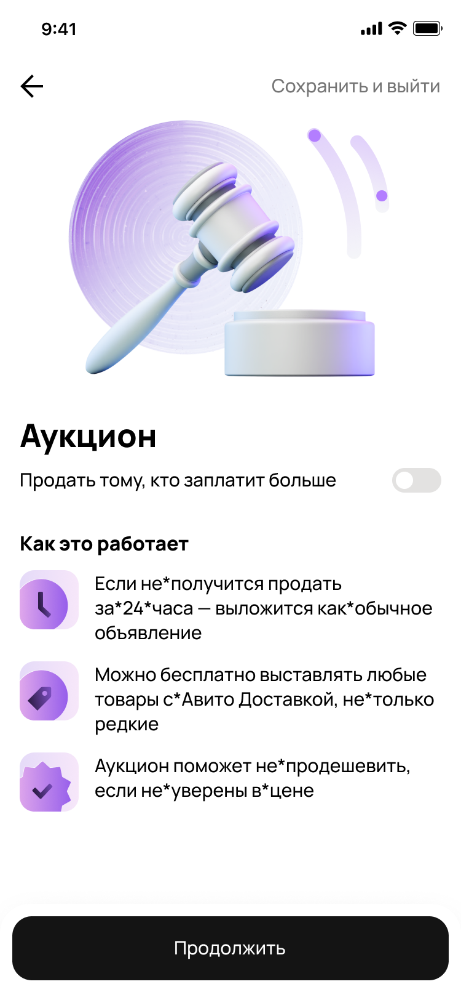
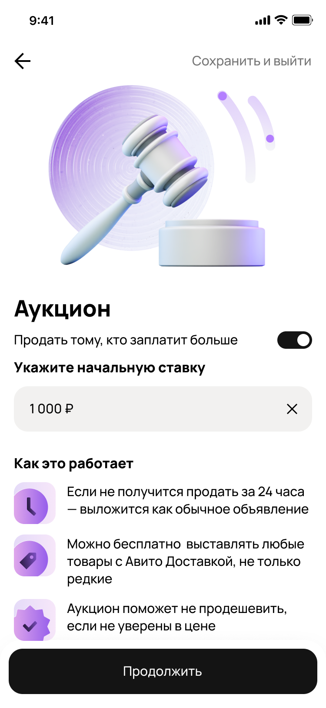
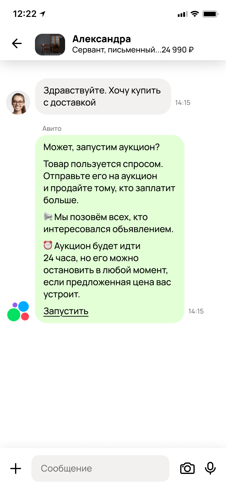
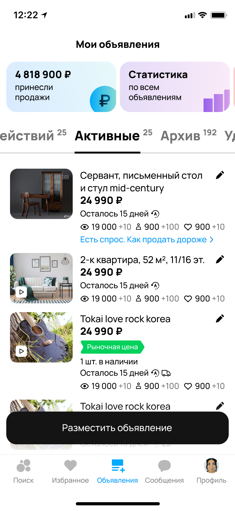
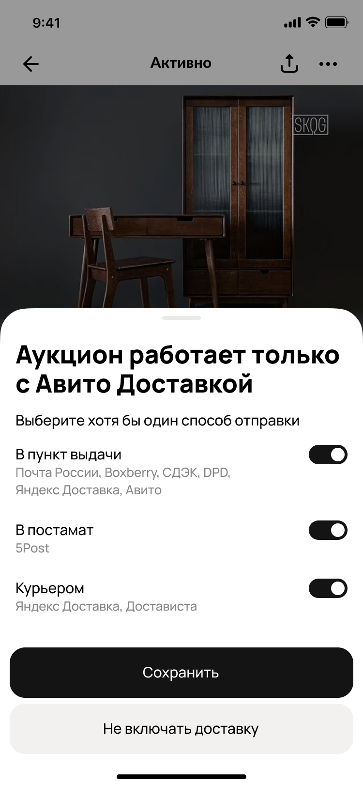
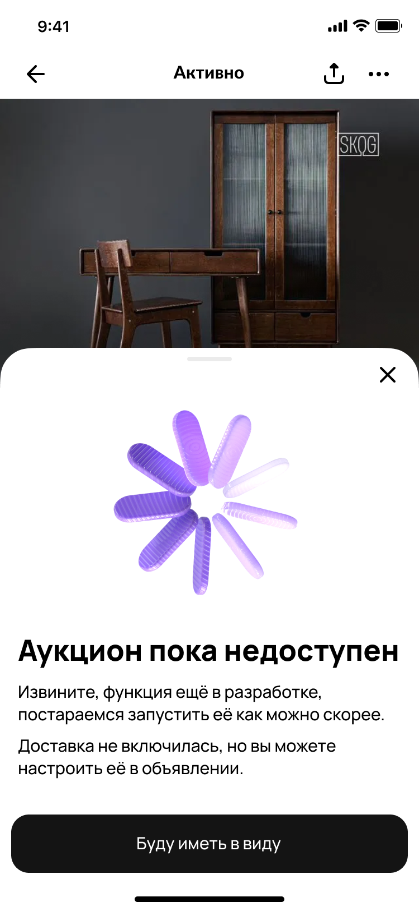
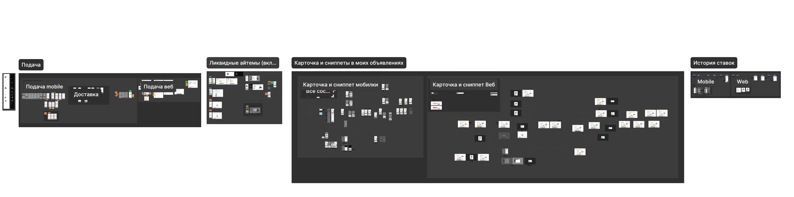

Аукцион — новый формат покупки на Авито, где покупатели соревнуются за товар через ставки.
Сейчас мы прорабатываем MLP, но чтобы к нему приступить, нам нужно было подтвердить потребность в продукте на фейкдорах
Потребность подтвердилась,
о тестах — ниже
Готовы ли продавцы подключать аукцион во время размещения товара?
Одним из шагов размещения показывали предложение выбора аукциона — 11,5% продавцов были готовы подключить, спрос есть
Это ниже, чем мы предполагали (25%), но за счёт более низкого спроса у нас ниже шансы замусорить выдачу плохими аукционами


Будут ли продавцы подключать аукцион, когда уже есть спрос?
Если мы заметили, что товар популярный (контакт в первые 24 часа после размещения), мы предлагали продавцу включить аукцион

Одновременно с этим на его товаре появляется предложение продать дороже

Подсвечиваем преимущества аукциона при подключении
В шторке настройки аукциона мы подставляем текущую стоимость товара, но даем возможность выбрать другую начальную цену.
В ходе эксперимента продавцы не меняли начальную цену
Из-за чего сделали вывод, что есть предполагаемый рост среднего чека за счёт того, что продавцы не меняют начальную цену +30,3%
750 сделок в сутки
Произошло по товарам, на которые продавцы были готовы подключить аукцион за время теста, это дало +25% к общему потенциалу
Доставка — обязательное условие аукциона, если доставка не была включена мы предлагаем подключить доставку
Возможен +0,1 paid items uplift за счёт включение доставки на товарах

Если прошёл happy path и не отказался — показываем в конце, что это был фейкдор

Мы подтвердили спрос среди продавцов
И перешли к проработке MLP, во время проработки MLP провели глубинные исследования наших флоу, доработали и передали в разработку
